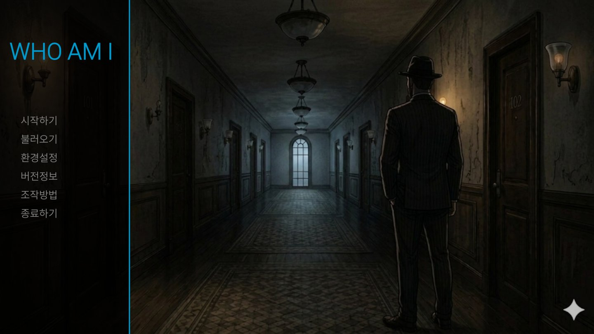
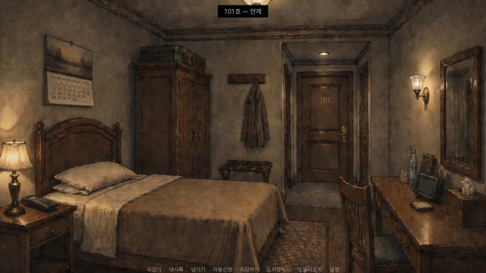
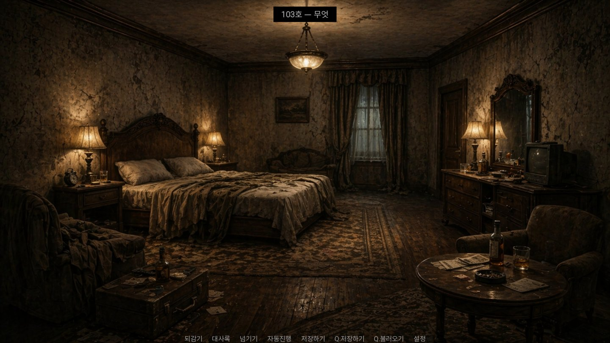
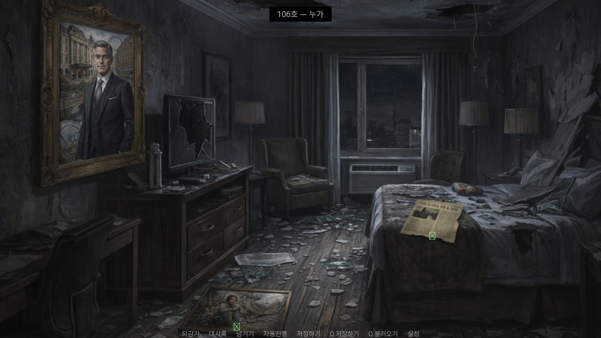
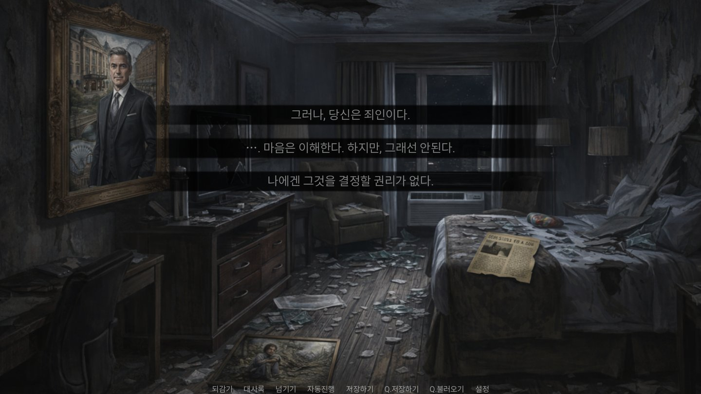
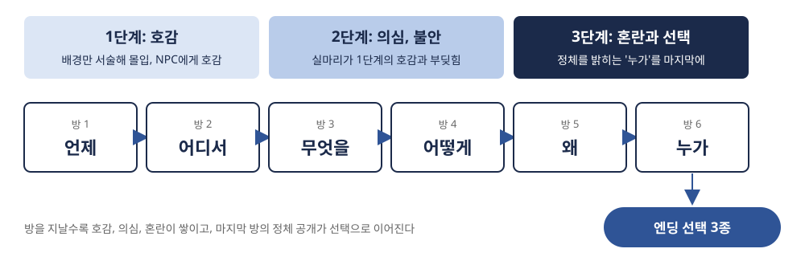
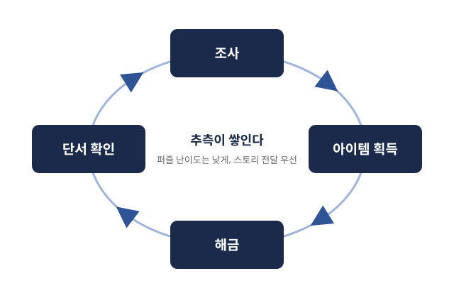

WHO AM I?: 추리 미스터리 비주얼 노벨 (5인 팀, 1주, 2026.04)
역할: 시스템, 레벨 디자인, 여섯 방의 감정 곡선과 배치 순서, 방별 조사 루프, 아이템, 상호작용 조건 설계, 팀원이 그대로 구현할 수 있는 조건 문서 작성






타이틀, 로비, 101호(호감), 103호(의심, 불안), 106호(혼란, 선택), 마지막 선택. 방이 진행될수록 배경이 낡고 어두워진다. 이미지와 구현은 팀 공동 작업이다.
팀 내 역할 (5인, 렌파이, 2026.04.20 ~ 26)
| 역할 | 담당 | 범위 |
|---|---|---|
| 일정 관리 | 팀원 | 팀 일정과 작업 보드 관리 |
| 시나리오 | 팀원 | 세계관과 메인 시나리오 |
| 시스템, 레벨 디자인 | 본인 | 플레이 루프, 로비 구조, 여섯 방의 감정 단계와 배치 순서, 방별 상호작용 조건 |
| 이미지 리소스 | 팀원 | 배경, 캐릭터, UI 이미지 |
| 스크립트 | 팀원 | 장면별 스크립트와 분기 |
감정 설계: 여섯 방의 배치 순서

| 단계 | 방 | 설계 |
|---|---|---|
| 1. 호감 | 언제, 어디서 | 인물 정보 없이 배경만 서술해 분위기에 몰입시키고 NPC에게 호감을 갖게 함 |
| 2. 의심, 불안 | 무엇을, 어떻게 | 사건의 실마리를 드러내 1단계의 호감과 부딪히게 함 |
| 3. 혼란, 선택 | 왜, 누가 | NPC 정체를 공개하는 '누가'를 마지막 방에 두어 엔딩 선택(기획 3종, 일정상 2종 구현)에 직결 |
1단계에서 쌓은 호감이 클수록 마지막 방에서 정체가 드러나는 순간이 무거워지도록, 방의 순서를 감정 순서에 맞췄다.
플레이 루프

조사, 아이템 획득, 해금, 단서 확인 루프. 스토리 전달이 핵심이라 퍼즐 난이도는 낮추고, 탐색하는 동안 추측이 쌓이도록 했다.